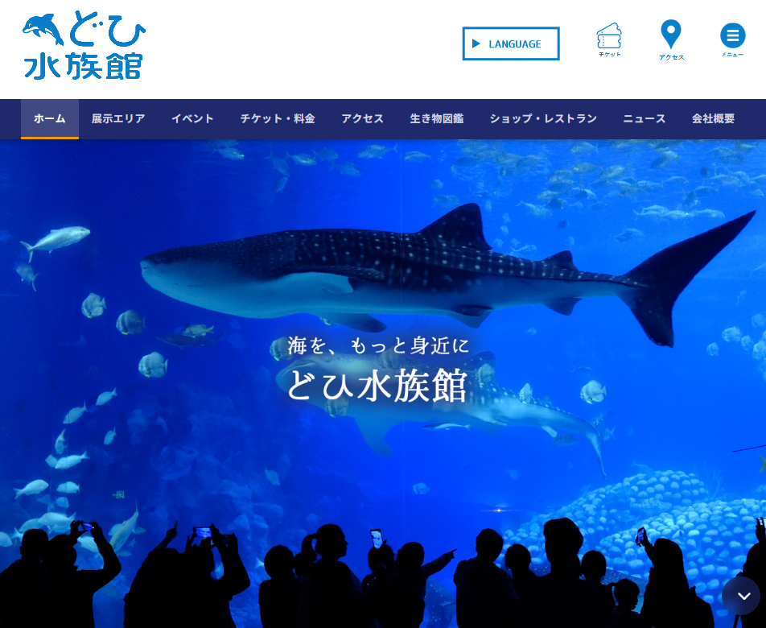

WEB SITE
WEB SITE / CORPORATE

「海を、もっと身近に」をコンセプトにした架空の水族館コーポレートサイトです。ホーム・展示エリア・イベント・チケット・アクセス・生き物図鑑・ショップ・ニュース・会社概要の多ページ構成で、実際の水族館サイトを想定したコンテンツを制作しました。
水族館らしい深海ブルーをメインカラーとして採用し、ヒーローセクションにはジンベイザメの迫力ある写真を全面配置することで、サイトを開いた瞬間に訪問者を海の世界へ引き込む演出を意識しました。ナビゲーションは上部に固定し、チケット購入・アクセス・メニューへのクイックリンクを常時表示することで、実用的なUXを実現しています。Photoshopで写真素材の編集・加工も行い、サイト全体のビジュアルを統一しました。
課題
情報量の多い水族館サイトで、視覚的な魅力と実用性（チケット・アクセス）を両立させる必要があった。
施策
深海ブルーのカラーパレットとヒーロー写真で没入感を演出。固定ナビにチケット・アクセスへのクイックリンクを常時配置してUXを確保。
結果
ビジュアル体験と機能性を両立した多ページ構成のコーポレートサイトを実現。9ページ分のコンテンツを統一感のあるデザインで完成。